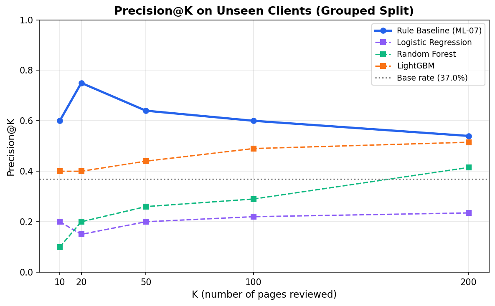
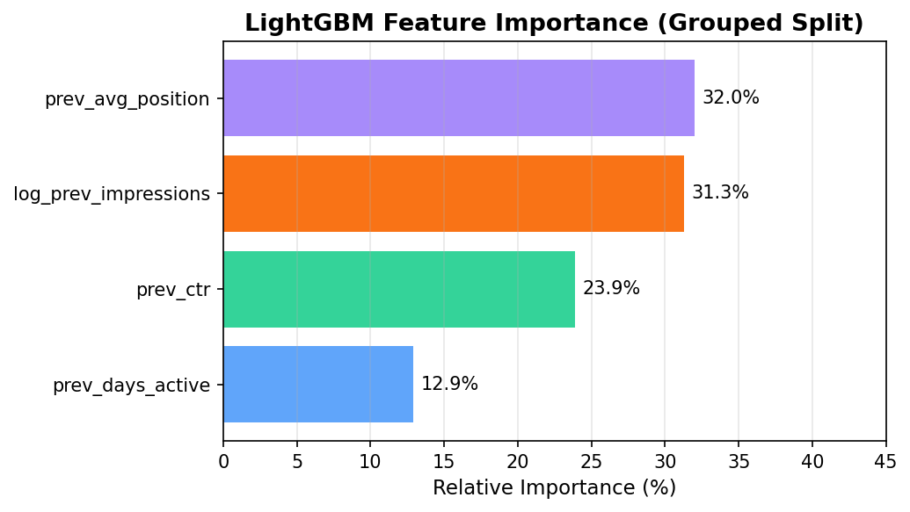
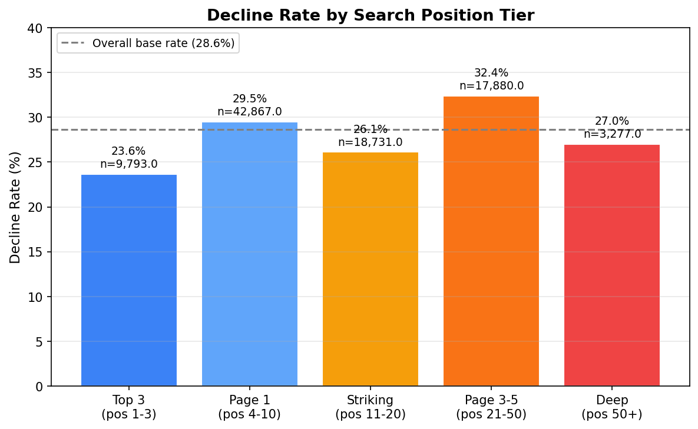

FlyRank ML Internship · March 2026 · Repository →
Question: Out of thousands of web pages managed by FlyRank, which ones are most likely to experience a traffic decline — and should be reviewed first?
Data: 92,548 pages across 40 pseudonymised clients from the FlyRank internship warehouse (March 2026, Google Search Console metrics). Features derived from Mar 1–15; label from Mar 16–31.
Method: A hand-crafted rule baseline (volume × position-tier penalty × CTR shield) was compared against three ML models (Logistic Regression, Random Forest, LightGBM) using GroupShuffleSplit by client — ensuring test clients were entirely unseen during training.
Result: The rule baseline achieved Precision@50 of 0.64 on 8 unseen clients (22,531 pages, base rate 37.0%), outperforming the best ML model (LightGBM, 0.44). Random-split evaluation inflated LightGBM’s Precision@20 by 50 percentage points (0.90 vs 0.40), revealing that the model memorised client identity rather than learning page-level decay signals.
Use: The rule-based priority queue is a directional decision-support tool for content teams. It identifies pages worth reviewing first — not a guarantee that refreshing them will recover traffic. A controlled experiment would be required to establish causality.
FlyRank manages thousands of content pages across dozens of client websites. Content that once ranked well in Google Search quietly decays — rankings slip, impressions drop, and by the time someone notices, the page has already lost significant traffic.
The decision this supports: A content operations team opens a dashboard on Monday morning. They have capacity to review 50 pages this week. Out of 92,548 pages — which 50 should they look at first, and why?
This is a ranking problem (prioritise the most at-risk pages), not a classification problem (predict yes/no for each page). The metric that matters is Precision@K — of the top K pages we flag, how many actually declined?
| Property | Value |
|---|---|
| Source | FlyRank Internship Warehouse (HuggingFace) |
| Table | fact_content_daily_performance (March 2026) |
| Total pages | 92,548 |
| Total clients | 40 (pseudonymised) |
| Feature window | Mar 1–15, 2026 (15 days) |
| Label window | Mar 16–31, 2026 (16 days) |
| Base rate (% declining) | 28.6% |
| Exclusion | Pages with < 50 impressions in Mar 1–15 |
All client and content IDs are hashed. No private names, URLs, or raw queries appear anywhere in this study.
A page is labelled is_declining = 1 if its total impressions in Mar 16–31 dropped more than 20% relative to Mar 1–15. This yields a base rate of 28.6% across the full pool.
| Feature | Description |
|---|---|
log_prev_impressions | Log-transformed total impressions (volume signal) |
prev_ctr | Click-through rate (engagement signal) |
prev_avg_position | Average search position (ranking signal) |
prev_days_active | Days with > 0 impressions (consistency signal) |
Each page is scored as: log1p(impressions) × position_tier_weight × ctr_shield. Position tiers (top-3, page-1, striking distance 11–20, page 3–5, deep) receive different weights reflecting opportunity size.
GroupShuffleSplit by client_hash_id (80/20): 32 clients in train, 8 entirely unseen clients in test (22,531 pages, test base rate 37.0%). This tests: “Does it work on a client it has never seen?”
imp_last15 into features caused P@K to jump to 1.000 — confirming the harness detects leakage.report_date ≤ 2026-03-15; the label uses report_date > 2026-03-15. Zero-day overlap.All four systems evaluated on the same grouped test set (8 unseen clients, 22,531 pages, base rate 37.0%):
| Model | P@10 | P@20 | P@50 | P@100 | P@200 |
|---|---|---|---|---|---|
| Rule Baseline Best | 0.60 | 0.75 | 0.64 | 0.60 | 0.54 |
| LightGBM | 0.40 | 0.40 | 0.44 | 0.49 | 0.52 |
| Random Forest | 0.10 | 0.20 | 0.26 | 0.29 | 0.42 |
| Logistic Regression | 0.20 | 0.15 | 0.20 | 0.22 | 0.24 |
| Random (base rate) | 0.37 | 0.37 | 0.37 | 0.37 | 0.37 |
The rule baseline (P@50 = 0.64) outperformed the best ML model (LightGBM, P@50 = 0.44) by +0.20 on unseen clients. Both beat the base rate (37.0%), confirming real signal in the data.

Figure 1: The rule baseline leads at every K. All systems converge toward the base rate as K grows.
Under random split, LightGBM achieved P@20 = 0.90. Under grouped split (unseen clients), the same model achieved P@20 = 0.40. The 50 percentage point gap revealed that the model was memorising client identity rather than learning page-level decay signals.

Figure 2: No single feature dominates (>80%), confirming no leakage signal.
Single time period. All results are from March 2026. Seasonal effects, algorithm updates, and industry trends from other months are not captured.
Limited client pool. 40 clients; validation used only 8 unseen clients. Performance on clients in different industries is unknown.
Only 4 traffic features. No content-level signals (page age, word count, topic embeddings). This is why ML models struggle to generalise.
Arbitrary label threshold. The 20% decline cutoff creates a binary label from a continuous distribution.
No causal evidence. We observed an association between the rule score and subsequent decline — we did not prove that refreshing high-scored pages would recover traffic.

Figure 3: Decline rates by position tier. Differences are modest (24–32%), confirming position alone is not a strong enough predictor.
| Property | Value |
|---|---|
| Repository | github.com/Artasam/Machine-Learning |
| Random seed | 42 (all operations) |
| Data | FlyRank/internship-warehouse |
| How to rerun | Open capstone.ipynb in Colab → add HF token → Run all |
| Notebooks | ML-06 through ML-11 in work/notebooks/ |
| Outputs | All metrics as JSON in work/outputs/ |
Data provided by FlyRank through a pseudonymised, public-safe release on Hugging Face. Google Search Console metrics collected and anonymised by FlyRank’s data engineering team. All analysis performed on Google Colab.